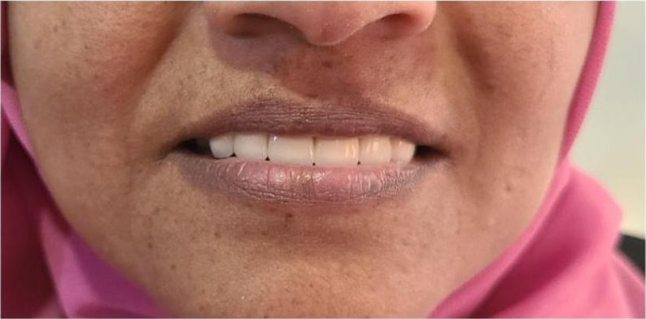
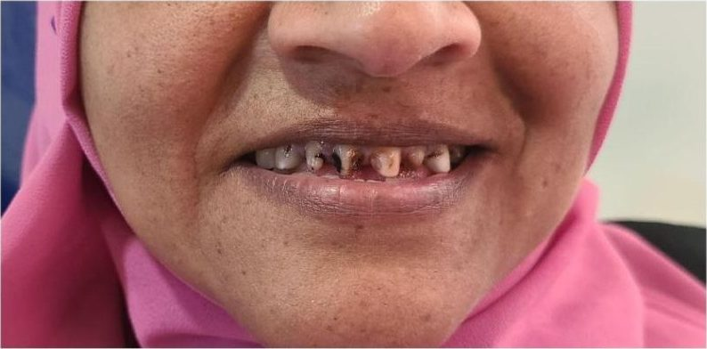

Real cases. Confident smiles.
Before-and-after results from five years of general practice by Dr. Zehra Sabuji, DHA-eligible General Dentist (BDS). Drag the slider to compare, then browse every case below.


BeforeAfterTreatment cases
Before and after, case by case.
Anterior smile makeover
Use the arrows, your arrow keys or a swipe to move between cases. Select a photo to enlarge it.
- Presenting condition
- Discoloured upper front teeth with irregular incisal edges and minor spacing.
- Treatment
- Esthetic veneering of the upper anterior segment.
- Result
- Uniform shade and an even, harmonious incisal line.
Case summaries
Case 01: Anterior smile makeover
Discoloured upper front teeth with irregular incisal edges and minor spacing. Esthetic veneering of the upper anterior segment. Uniform shade and an even, harmonious incisal line.
Case 02: Replacement and restoration of upper front teeth
Missing and broken-down upper anterior teeth with spacing. Replacement of the missing teeth and restoration of the anterior segment. A continuous, natural-looking upper arch.
Case 03: Esthetic realignment of upper front teeth
Crowded, rotated and discoloured upper anterior teeth. Esthetic restorations to correct alignment, shape and shade. An aligned arch form with improved colour.
Case 04: Caries removal and esthetic anterior restoration
Interproximal caries and dark staining across the upper anterior teeth. Caries removal and tooth-coloured restoration of the upper anteriors. Sound, natural-looking teeth with closed dark triangles.
Case 05: Full anterior esthetic rehabilitation
Rampant caries with grossly broken-down upper anterior teeth. Full esthetic rehabilitation of the upper anterior segment. A complete, bright smile with function restored.
Case 06: Direct composite restorations
Fractured upper lateral incisor and carious upper central incisor. Direct composite restorations. Restored tooth form, contacts and shade match.
Case 07: Composite build-up of fractured incisors
Chipped incisal edges of the upper central and lateral incisors, with spacing. Direct composite build-up of the incisal edges and closure of the spaces. Restored incisal length and an even smile line.
Case 08: Esthetic restoration of upper anterior teeth
Cervical decay, staining and malpositioned lateral incisors. Esthetic restoration of the upper anterior teeth. Improved alignment, contour and colour.
Case 09: Anterior esthetic restoration
Discoloured upper anterior teeth with uneven form. Esthetic restoration of the upper anterior teeth. A brighter, more uniform smile.
Case 10: Closing an anterior gap
A space in the upper anterior segment from a missing or malpositioned tooth. Restoration of the space to re-establish the arch (lateral view). A continuous arch with balanced tooth proportions.
Case 11: Replacement of a missing upper tooth
A gap in the upper left arch from a missing tooth. Replacement of the missing tooth. A complete upper arch and a full smile.
Case 12: Extraction with radiographic assessment
A tooth indicated for extraction, assessed on a pre-operative periapical radiograph. Forceps extraction. The tooth was removed whole and is shown beside its radiograph.
Clinical records
More from the clinic.
More pre- and post-operative photographs. Select any image to enlarge it.
Clinical photographs are cropped to the oral region to protect patient privacy.
At a glance
The clinician behind the cases.
- Aug 2023 – May 2026
General Dentist
Chandrathaara Dental Health Centre · Karunagappally, India
Simple, wisdom tooth and surgical molar extractions; anterior root canal treatment with post and core; crowns, bridges and dentures; scaling, root planing and composite restorations.
- Jul 2022 – Jul 2023
General Dentist
Ardent Multi Speciality Dental Clinic · Neyyattinkara, India
Diagnosis and individualised treatment planning; preventive, restorative and minor surgical care under local anaesthesia; myofunctional appliances.
- Jan 2021 – Jun 2022
General Dentist
Latheef’s Dental Clinic · Kaniyapuram, India
Independently ran daily clinic operations and patient records while providing preventive, restorative and minor surgical treatment.
Dubai Health Authority
Healthcare Professional Registration, General Dentist
DHA Unique ID 13182065 · valid to 18 September 2027
Bachelor of Dental Surgery (BDS)
Kerala University of Health Sciences, 2014 – 2020
Kerala Dental Council Registration No. 26838
Languages
Get in touch
Let's talk about your clinic's next dentist.
Based in Dubai as a UAE resident (dependent visa) and available to join immediately, full-time or part-time.